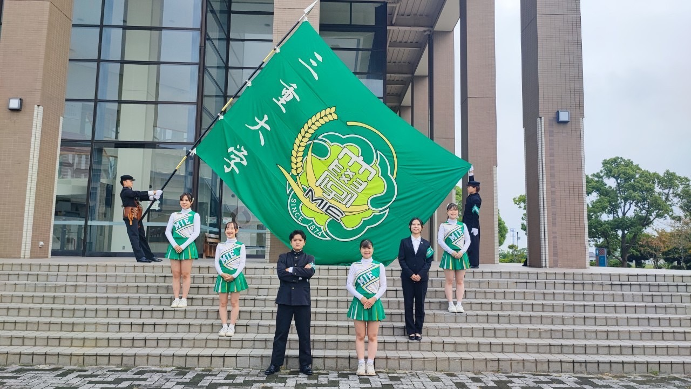
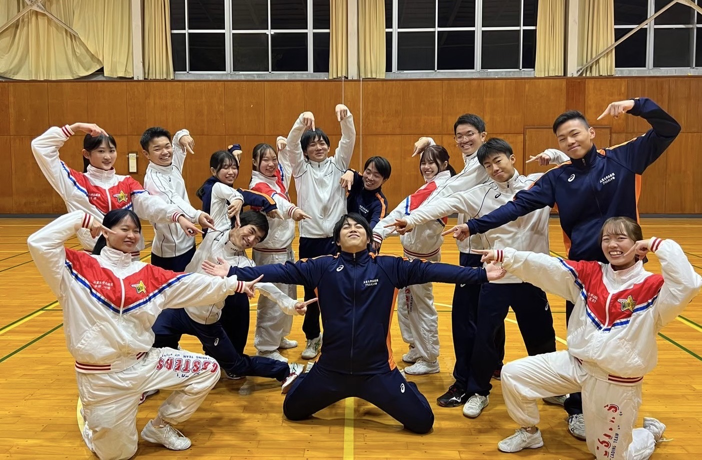

【団長】鈴木康汰
名古屋市立北高等学校
人文学部法律経済学科
【主務】舟橋一輝
愛知県立西春高等学校
人文学部法律経済学科
【副務】金子竜也
名古屋市立北高等学校
工学部分子素材工学科
【翠ヶ丘会総務】大森美幸
三重県立津東高等学校
生物資源学部生物圏生命化学科
【会計兼広報責任者】山田将大
三重県立神戸高等学校
工学部分子素材工学科
【編集責任者兼新人監督】島本健吾
大阪府立泉陽高等学校
工学部物理工学科
【ブラスバンド部長】今井康暉
愛知県立新川高等学校
工学部分子素材工学科
【チアリーダー部長】小林日愛
愛知県立一宮興道高等学校
人文学部法律経済学科
【新人監督】川口真央
三重県立大本高等学校
教育学部学校教育教員養成課程英語教育コース
【新人監督】稲吉柚音
愛知県立刈谷高等学校
人文学部法律経済学科
上に戻る
準幹部

＜リーダー部＞
詫間龍太(人・法経)／中根秀人(工・電電)
＜ブラスバンド部＞
中條遥斗(人・文化)
飯田裕乃(工・応用化学)／松山美穂子(人・文化)
＜チアリーダー部＞
井澤花梨(人・法経)／石倉花梨(教・社会)
河野今甫(生・資循)／日比葉月(教・社会)／力野フェルナンダ(人・文化)
二年生

＜リーダー部＞
平野颯也(工・建築)
＜ブラスバンド部＞
中島慶(生・共生)／岩本梨沙(教・社会)／福田紫都(生・共生)
＜チアリーダー部＞
中川華月(生・資循)／村中優香(生・生生)／森村真帆(工・応用化学)
一年生
上に戻る